Hazel 游戏引擎笔记 016：把 ImGui 接入 Hazel 事件系统
本节来源：The Cherno 游戏引擎系列第 16 讲“ImGui 事件”，时长约 23 分 02 秒。
原课程与 Hazel 代码作者：The Cherno。代码参考提交：709b40de。
本文由视频字幕重构、翻译并整理，不是官方教材；术语和代码以原视频及同期 Hazel 仓库为准。
本节目标
上一讲已经能让 Dear ImGui 在 Hazel 窗口中显示 Demo Window，但它只能看、不能操作。本讲把 Hazel 的事件系统接进 ImGuiLayer，让鼠标、键盘和窗口缩放真正驱动 ImGui。
完成后的能力包括：
- 鼠标移动、点击、拖拽和滚轮；
- 移动、折叠 ImGui 窗口并操作控件；
- 键盘按键按下与释放状态；
- Ctrl、Shift、Alt、Super 修饰键；
- 向 ImGui 文本框输入字符；
- 窗口缩放后保持正确的显示尺寸和 OpenGL viewport。
整条链路可以概括为：
graph LR
A[GLFW 原生回调] --> B[WindowsWindow]
B --> C[Hazel Event]
C --> D[Application::OnEvent]
D --> E[LayerStack 反向传播]
E --> F[ImGuiLayer::OnEvent]
F --> G[EventDispatcher]
G --> H[具体 OnXxxEvent]
H --> I[更新 ImGuiIO]
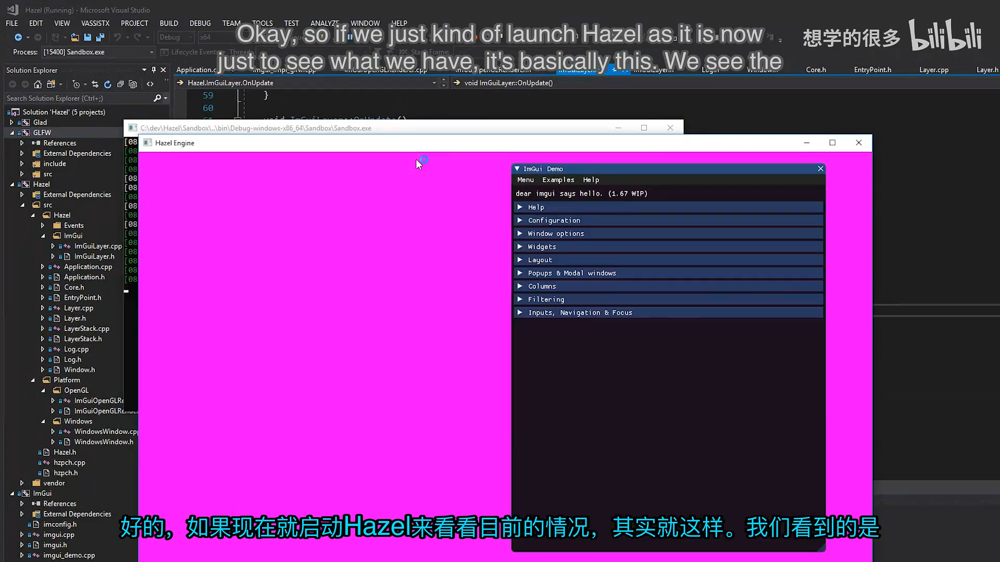
📷 上一讲只能显示、无法交互的 ImGui Demo Window
回到原视频 (00:02:55)
1. 从 ImGui 的 GLFW 后端借鉴实现
(参考时间: 00:03:02)
最直接的参考对象是 Dear ImGui 自带的 imgui_impl_glfw.cpp。其中已经处理了 GLFW 的回调，并把输入状态写入 ImGuiIO：
- Key callback 更新按键状态；
- Scroll callback 更新滚轮；
- Mouse button callback 更新鼠标按钮；
- Cursor position callback 更新鼠标位置；
- Char callback 提供实际输入的字符。
例如，键盘回调会执行类似逻辑：
io.KeysDown[key] = true;
这里的 key 并不是直接作为 ImGui 内部数组下标使用，而是与上一讲配置的 io.KeyMap 对应。Hazel 本讲不会照搬整个后端，而是参考它的数据流，用 Hazel 自己的 Event 和 EventDispatcher 重新实现。
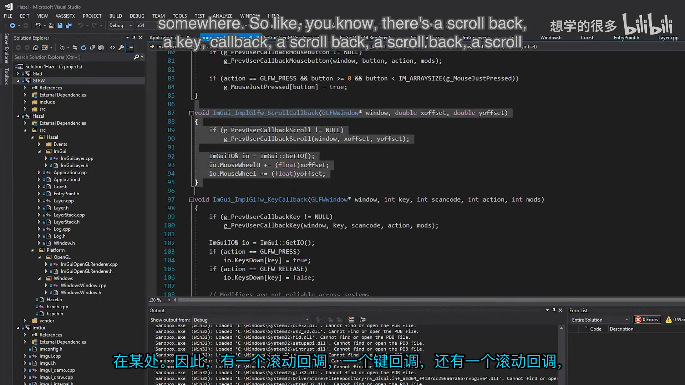
📷 参考 imgui_impl_glfw 的键回调与 ImGuiIO 更新
回到原视频 (00:03:18)
2. 在 ImGuiLayer 中声明事件处理函数
(参考时间: 00:04:21)
ImGuiLayer 需要处理几乎所有常见输入事件。头文件先包含三类 Hazel 事件：
#include "Hazel/Events/ApplicationEvent.h"
#include "Hazel/Events/KeyEvent.h"
#include "Hazel/Events/MouseEvent.h"
然后为每类事件声明一个私有处理函数。处理函数返回 bool，表示该事件是否已经被消费：
class HAZEL_API ImGuiLayer : public Layer
{
public:
ImGuiLayer();
~ImGuiLayer();
void OnAttach();
void OnDetach();
void OnUpdate();
void OnEvent(Event& event);
private:
bool OnMouseButtonPressedEvent(
MouseButtonPressedEvent& e);
bool OnMouseButtonReleasedEvent(
MouseButtonReleasedEvent& e);
bool OnMouseMovedEvent(MouseMovedEvent& e);
bool OnMouseScrolledEvent(MouseScrolledEvent& e);
bool OnKeyPressedEvent(KeyPressedEvent& e);
bool OnKeyReleasedEvent(KeyReleasedEvent& e);
bool OnKeyTypedEvent(KeyTypedEvent& e);
bool OnWindowResizeEvent(WindowResizeEvent& e);
private:
float m_Time = 0.0f;
};
事件处理的职责非常明确：把 Hazel 事件中的数据翻译成 ImGui 需要维护的状态。
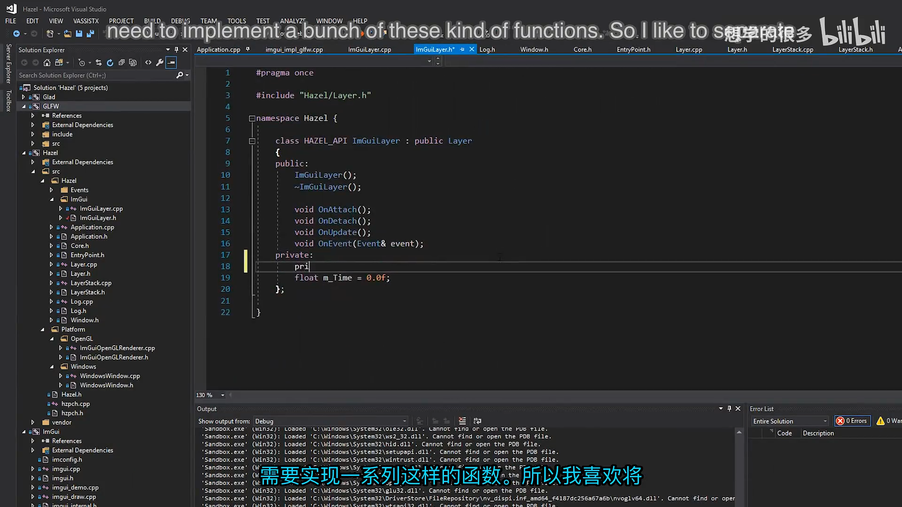
📷 在 ImGuiLayer.h 中声明鼠标、键盘和窗口事件处理函数
回到原视频 (00:04:25)
3. 用 EventDispatcher 分发事件
(参考时间: 00:07:09)
ImGuiLayer::OnEvent() 只负责判断事件类型，然后把事件转交给对应函数。判断工作交给 EventDispatcher：
void ImGuiLayer::OnEvent(Event& event)
{
EventDispatcher dispatcher(event);
dispatcher.Dispatch<MouseButtonPressedEvent>(
HZ_BIND_EVENT_FN(
ImGuiLayer::OnMouseButtonPressedEvent));
dispatcher.Dispatch<MouseButtonReleasedEvent>(
HZ_BIND_EVENT_FN(
ImGuiLayer::OnMouseButtonReleasedEvent));
dispatcher.Dispatch<MouseMovedEvent>(
HZ_BIND_EVENT_FN(ImGuiLayer::OnMouseMovedEvent));
dispatcher.Dispatch<MouseScrolledEvent>(
HZ_BIND_EVENT_FN(ImGuiLayer::OnMouseScrolledEvent));
dispatcher.Dispatch<KeyPressedEvent>(
HZ_BIND_EVENT_FN(ImGuiLayer::OnKeyPressedEvent));
dispatcher.Dispatch<KeyTypedEvent>(
HZ_BIND_EVENT_FN(ImGuiLayer::OnKeyTypedEvent));
dispatcher.Dispatch<KeyReleasedEvent>(
HZ_BIND_EVENT_FN(ImGuiLayer::OnKeyReleasedEvent));
dispatcher.Dispatch<WindowResizeEvent>(
HZ_BIND_EVENT_FN(ImGuiLayer::OnWindowResizeEvent));
}
3.1 减少回调绑定样板代码
成员函数需要绑定当前 ImGuiLayer 实例，再保留一个事件参数占位符。直接写 std::bind 会非常冗长，因此在 Core.h 中增加宏：
#define HZ_BIND_EVENT_FN(fn) \
std::bind(&fn, this, std::placeholders::_1)
于是 HZ_BIND_EVENT_FN(ImGuiLayer::OnMouseMovedEvent) 会生成一个可交给 EventDispatcher 调用的函数对象。
sequenceDiagram
participant W as WindowsWindow
participant A as Application
participant L as ImGuiLayer
participant D as EventDispatcher
participant F as OnXxxEvent
participant IO as ImGuiIO
W->>A: EventCallback(event)
A->>L: OnEvent(event)
L->>D: Dispatch<T>(handler)
D->>D: 比较 event type
D->>F: 类型匹配时调用
F->>IO: 更新输入或显示状态
F-->>D: return false
D-->>L: event.Handled 保持 false
多个处理函数返回 false，表示 ImGuiLayer 更新了 ImGui 状态，但不独占事件。这样事件仍能继续传给其它 Layer。
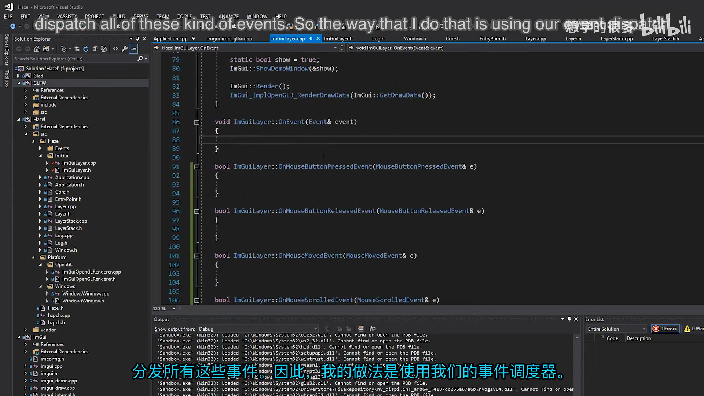
📷 在 ImGuiLayer 的 OnEvent 中集中分发事件
回到原视频 (00:07:09)
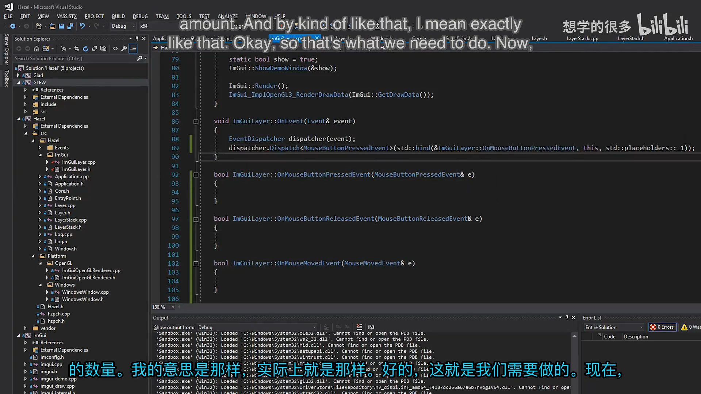
📷 把 std::bind 封装为 HZ_BIND_EVENT_FN 宏
回到原视频 (00:08:52)
4. 接入鼠标事件
(参考时间: 00:10:03)
鼠标事件是验证整条链路最直接的一组输入。
4.1 鼠标按钮
按下时把对应按钮设为 true，释放时设为 false：
bool ImGuiLayer::OnMouseButtonPressedEvent(
MouseButtonPressedEvent& e)
{
ImGuiIO& io = ImGui::GetIO();
io.MouseDown[e.GetMouseButton()] = true;
return false;
}
bool ImGuiLayer::OnMouseButtonReleasedEvent(
MouseButtonReleasedEvent& e)
{
ImGuiIO& io = ImGui::GetIO();
io.MouseDown[e.GetMouseButton()] = false;
return false;
}
虽然 ImGui 已经能收到按钮状态，但当前无法判断鼠标是否真的落在某个 ImGui 控件上，因此仍然返回 false。这样其它 Layer 也有机会处理同一次点击，而不是所有鼠标事件都被 ImGuiLayer 吃掉。
4.2 鼠标移动
bool ImGuiLayer::OnMouseMovedEvent(MouseMovedEvent& e)
{
ImGuiIO& io = ImGui::GetIO();
io.MousePos = ImVec2(e.GetX(), e.GetY());
return false;
}
4.3 滚轮
Hazel 的 MouseScrolledEvent 分别提供水平与垂直偏移：
bool ImGuiLayer::OnMouseScrolledEvent(
MouseScrolledEvent& e)
{
ImGuiIO& io = ImGui::GetIO();
io.MouseWheelH += e.GetXOffset();
io.MouseWheel += e.GetYOffset();
return false;
}
这里使用累加而不是直接赋值，因为一帧中可能收到多次滚轮事件。
flowchart TD
A[GLFW 鼠标回调] --> B{事件类型}
B -- Button --> C[io.MouseDown]
B -- CursorPos --> D[io.MousePos]
B -- Scroll --> E[io.MouseWheelH / MouseWheel]
C --> F[返回 false]
D --> F
E --> F
F --> G[事件继续向其它 Layer 传播]
完成鼠标部分后，已经可以移动 ImGui 窗口、展开节点并对控件点击和拖拽。
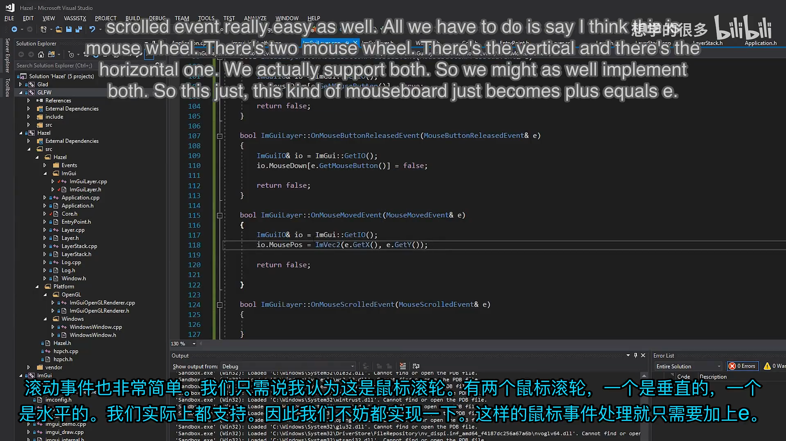
📷 鼠标移动、点击与滚轮状态写入 ImGuiIO
回到原视频 (00:11:26)
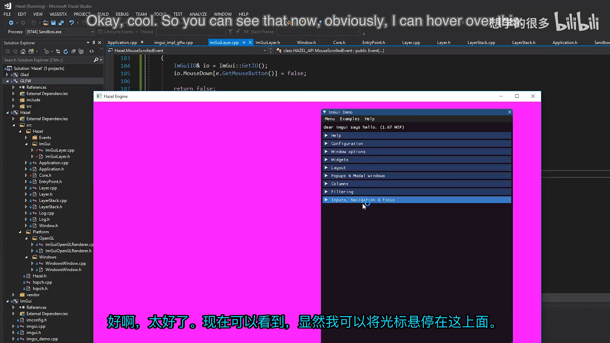
📷 接入鼠标事件后可以拖动和操作 ImGui 窗口
回到原视频 (00:12:52)
5. 处理窗口缩放
(参考时间: 00:13:10)
窗口尺寸变化不仅影响布局，也影响 ImGui 的显示区域和 OpenGL 的实际渲染范围。
第一次编译时提示找不到 WindowResizeEvent，因为 ImGuiLayer 还没有包含 ApplicationEvent.h。补上头文件后实现：
bool ImGuiLayer::OnWindowResizeEvent(
WindowResizeEvent& e)
{
ImGuiIO& io = ImGui::GetIO();
io.DisplaySize = ImVec2(e.GetWidth(), e.GetHeight());
io.DisplayFramebufferScale = ImVec2(1.0f, 1.0f);
glViewport(0, 0, e.GetWidth(), e.GetHeight());
return false;
}
三个更新分别解决：
DisplaySize：告诉 ImGui 新的逻辑窗口尺寸；DisplayFramebufferScale：暂时固定为1:1，本讲不处理高 DPI；glViewport：把 OpenGL 输出映射到新的窗口区域。
glViewport 需要 Glad：
#include <glad/glad.h>
这里直接修改 OpenGL viewport 是明确的临时方案，因为 Hazel 还没有自己的 Renderer。当前它能让缩放立即生效，但未来应由渲染抽象统一管理。
graph TD
A[WindowResizeEvent] --> B[更新 io.DisplaySize]
A --> C[设置 DisplayFramebufferScale = 1:1]
A --> D[glViewport 更新 OpenGL 区域]
B --> E[ImGui 使用新布局尺寸]
D --> F[新窗口区域正常渲染]
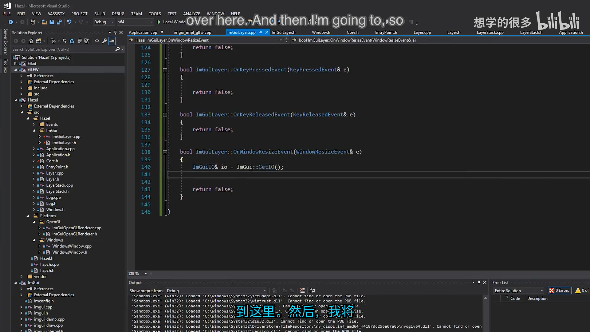
📷 窗口缩放事件更新 DisplaySize、framebuffer scale 和 viewport
回到原视频 (00:13:24)
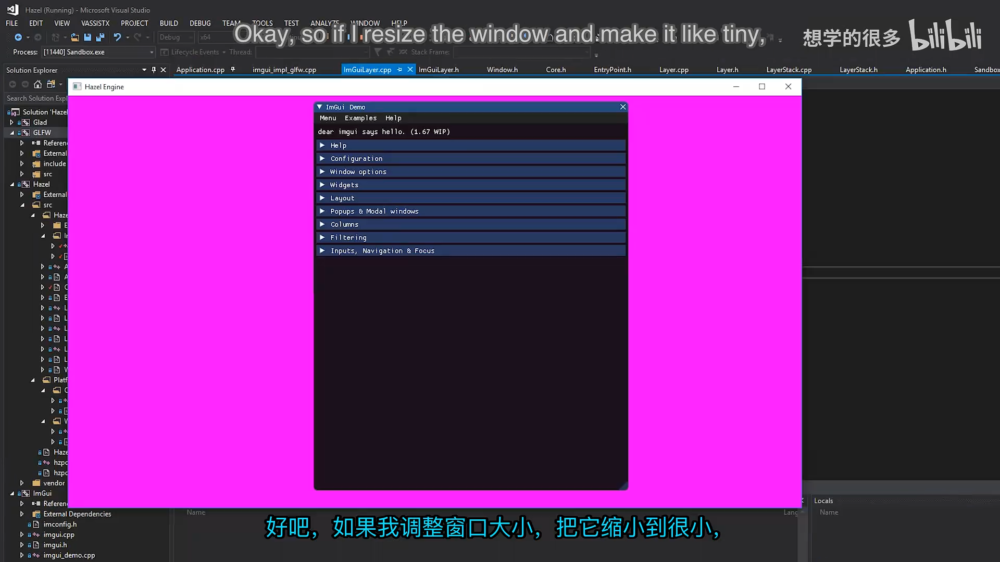
📷 缩放后 ImGui 能绘制到新增的窗口区域
回到原视频 (00:14:34)
6. 接入键盘状态与修饰键
(参考时间: 00:14:45)
键盘按下与释放首先更新 ImGui 的按键数组：
bool ImGuiLayer::OnKeyPressedEvent(KeyPressedEvent& e)
{
ImGuiIO& io = ImGui::GetIO();
io.KeysDown[e.GetKeyCode()] = true;
// 随后更新修饰键
return false;
}
bool ImGuiLayer::OnKeyReleasedEvent(KeyReleasedEvent& e)
{
ImGuiIO& io = ImGui::GetIO();
io.KeysDown[e.GetKeyCode()] = false;
return false;
}
6.1 修饰键
ImGui 不直接依赖左右 Ctrl 或左右 Shift，而是使用统一的修饰键状态。OnKeyPressedEvent() 在更新按键数组后重新计算：
io.KeyCtrl =
io.KeysDown[GLFW_KEY_LEFT_CONTROL] ||
io.KeysDown[GLFW_KEY_RIGHT_CONTROL];
io.KeyShift =
io.KeysDown[GLFW_KEY_LEFT_SHIFT] ||
io.KeysDown[GLFW_KEY_RIGHT_SHIFT];
io.KeyAlt =
io.KeysDown[GLFW_KEY_LEFT_ALT] ||
io.KeysDown[GLFW_KEY_RIGHT_ALT];
io.KeySuper =
io.KeysDown[GLFW_KEY_LEFT_SUPER] ||
io.KeysDown[GLFW_KEY_RIGHT_SUPER];
只要左右任意一侧按下，统一状态就为真。Super 对应 Windows 键或 macOS 的 Command 键，使用平台无关的命名。
flowchart TD
A[KeyPressedEvent] --> B["io.KeysDown[key] = true"]
B --> C{检查左右 Ctrl}
C --> D[io.KeyCtrl]
B --> E{检查左右 Shift}
E --> F[io.KeyShift]
B --> G{检查左右 Alt}
G --> H[io.KeyAlt]
B --> I{检查左右 Super}
I --> J[io.KeySuper]
编者说明：该官方提交只在 OnKeyPressedEvent() 中重算修饰键，OnKeyReleasedEvent() 只把具体键设为 false。因此释放 Ctrl、Shift、Alt 或 Super 时，对应统一状态要等下一次按键事件才会刷新。这个细节与后续替换 Hazel 键码、完善输入系统的工作直接相关。
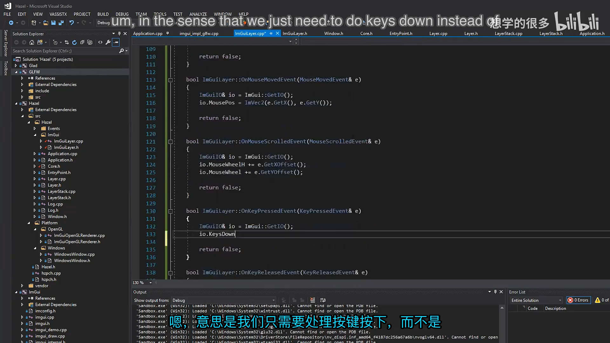
📷 键按下和释放状态写入 io.KeysDown
回到原视频 (00:14:55)
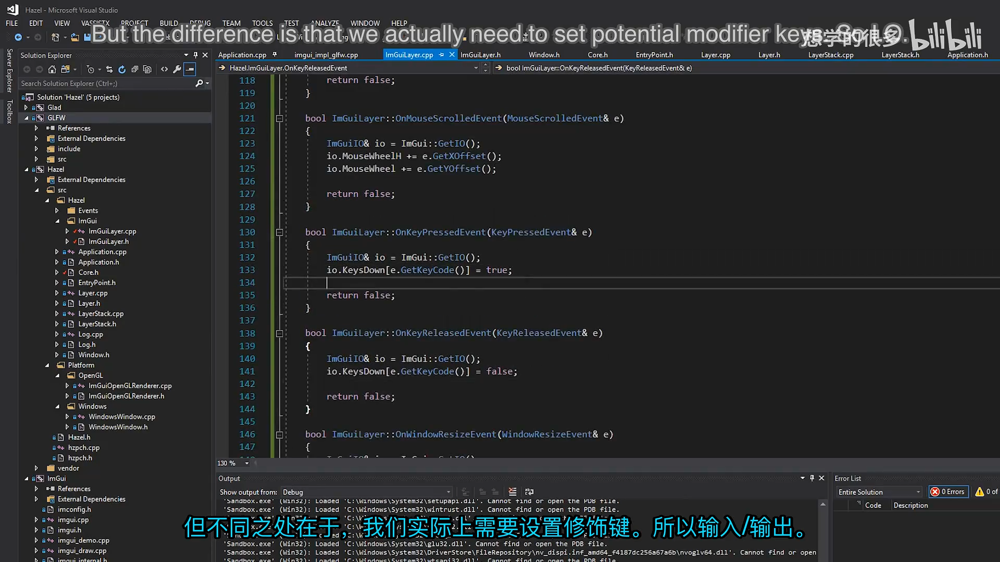
📷 根据左右 GLFW 键码更新 Ctrl、Shift、Alt 和 Super
回到原视频 (00:15:08)
7. 新增 KeyTypedEvent
(参考时间: 00:16:26)
普通键盘事件传递的是物理键码，但文本框需要的是用户实际输入的字符。例如 Shift 与 1 可能产生 !，而不同键盘布局也可能生成不同字符。
ImGui 的 GLFW 后端使用 glfwSetCharCallback 处理这一层。Hazel 目前没有对应的“字符输入”事件，因此需要新增 KeyTypedEvent。
7.1 扩展事件类型
在 Event.h 的 EventType 中加入：
enum class EventType
{
None = 0,
WindowClose, WindowResize, WindowFocus,
WindowLostFocus, WindowMoved,
AppTick, AppUpdate, AppRender,
KeyPressed, KeyReleased, KeyTyped,
MouseButtonPressed, MouseButtonReleased,
MouseMoved, MouseScrolled
};
7.2 定义 KeyTypedEvent
KeyTypedEvent 复用 KeyEvent 的键码字段，但不再保存重复次数：
class HAZEL_API KeyTypedEvent : public KeyEvent
{
public:
KeyTypedEvent(int keycode)
: KeyEvent(keycode) {}
std::string ToString() const override
{
std::stringstream ss;
ss << "KeyTypedEvent: " << m_KeyCode;
return ss.str();
}
EVENT_CLASS_TYPE(KeyTyped)
};
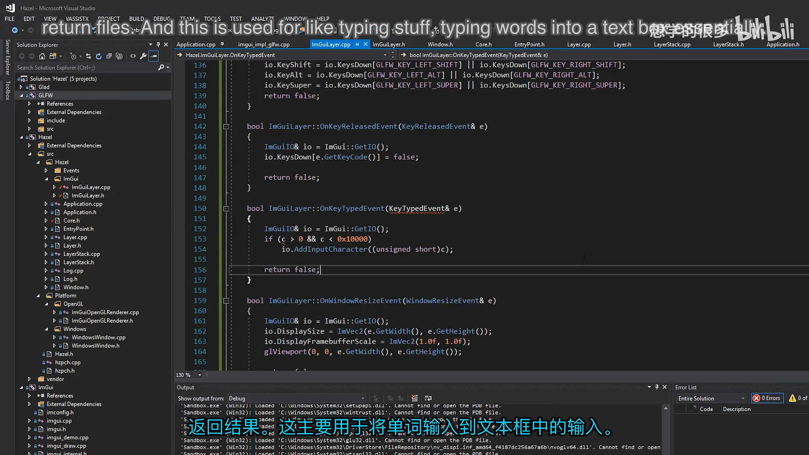
📷 在 KeyEvent.h 中新增 KeyTypedEvent
回到原视频 (00:17:17)
7.3 从 GLFW 捕获字符
WindowsWindow 除了设置 key callback，还增加 GLFW char callback：
glfwSetCharCallback(
m_Window,
[](GLFWwindow* window, unsigned int keycode)
{
WindowData& data =
*(WindowData*)glfwGetWindowUserPointer(window);
KeyTypedEvent event(keycode);
data.EventCallback(event);
});
参数是无符号整数形式的 Unicode 字符码。
7.4 把字符交给 ImGui
bool ImGuiLayer::OnKeyTypedEvent(KeyTypedEvent& e)
{
ImGuiIO& io = ImGui::GetIO();
int keycode = e.GetKeyCode();
if (keycode > 0 && keycode < 0x10000)
io.AddInputCharacter((unsigned short)keycode);
return false;
}
AddInputCharacter() 接收 unsigned short，因此先检查字符码是否落在有效范围内，再安全转换。
sequenceDiagram
participant GLFW as GLFW char callback
participant W as WindowsWindow
participant A as Application
participant L as ImGuiLayer
participant IO as ImGuiIO
GLFW->>W: Unicode code point
W->>A: KeyTypedEvent
A->>L: OnEvent
L->>L: 检查 0 < code < 0x10000
L->>IO: AddInputCharacter(code)
IO-->>L: 字符进入输入队列
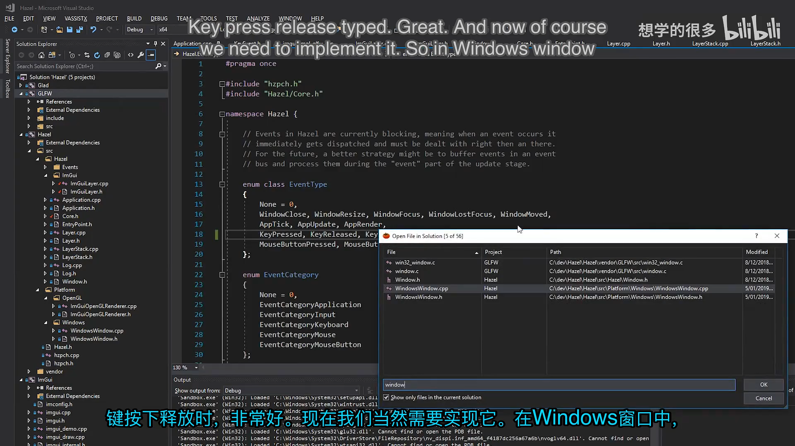
📷 增加 GLFW char callback 并派发 KeyTypedEvent
回到原视频 (00:18:16)
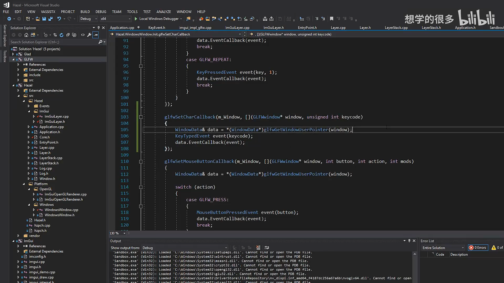
📷 OnKeyTypedEvent 调用 AddInputCharacter
回到原视频 (00:19:03)
8. 完整交互测试
(参考时间: 00:19:47)
完成以上事件后，ImGui Demo Window 已经可以通过 Hazel 的事件系统完整接受常用输入：
| 输入 | 结果 |
|---|---|
| 鼠标移动 | 悬停与光标定位 |
| 鼠标点击、拖拽 | 按钮、节点、窗口移动 |
| 滚轮 | 列表和面板滚动 |
| 普通键 | 按键状态 |
| 字符输入 | 文本框字符 |
| Ctrl / Shift / Alt / Super | 修饰键状态 |
| 窗口缩放 | DisplaySize 与 viewport 同步 |
测试中可以打开 ImGui 的 Log 面板，在过滤框里输入 hello、数值或组合键操作，也能用 Ctrl+A 选中文本。
复制粘贴当时还不可用，因为 ImGui 的剪贴板回调尚未接入；视频把它留给读者作为练习。
Demo Window 的位置和尺寸也会保存到 Sandbox/imgui.ini，下次启动时可以恢复。
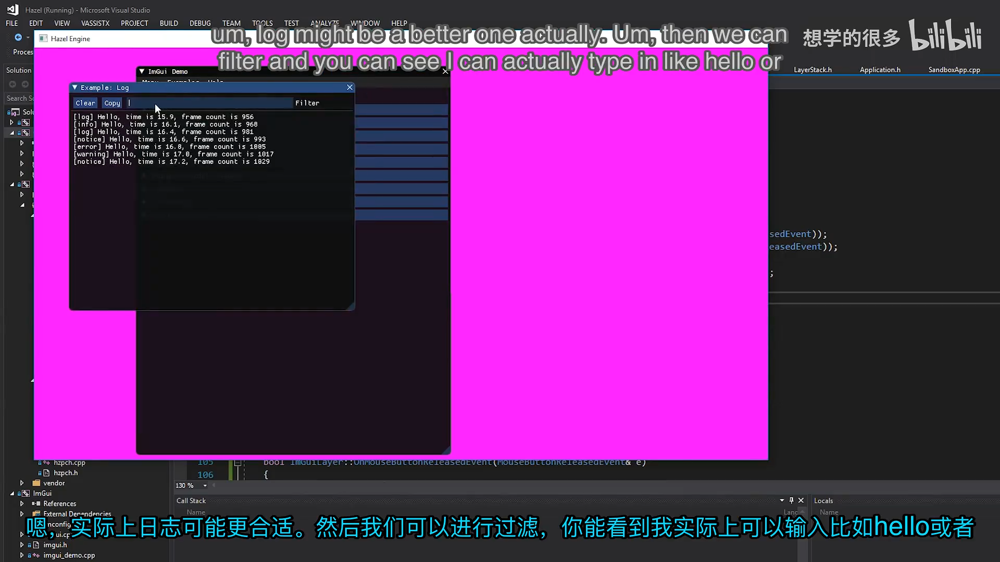
📷 在 ImGui Log 面板中输入文本并使用组合键
回到原视频 (00:20:05)
9. 当前实现的技术债
(参考时间: 00:20:34)
本讲让事件系统真正可用，但仍保留三处明显债务。
9.1 直接调用 glViewport
窗口缩放处理直接依赖 Glad 和 OpenGL：
glViewport(0, 0, e.GetWidth(), e.GetHeight());
这是本讲最明显的临时耦合。未来 Hazel 有 Renderer 后，应通过渲染 API 设置 viewport。
9.2 仍使用 GLFW 键码
修饰键判断直接使用：
GLFW_KEY_LEFT_CONTROL
GLFW_KEY_RIGHT_CONTROL
ImGuiLayer 仍然知道 GLFW 的具体键码。下一步应建立 Hazel 自己的键盘与鼠标编码，再由平台层完成转换。
9.3 只有事件，没有输入轮询
目前可以在输入发生时收到事件，但不能询问：
Ctrl 现在是否按下？
鼠标左键现在是否按下？
客户端若只依赖事件，就必须自己维护所有键和鼠标按钮的当前状态。更好的设计是让 Hazel 内部保存状态，并提供统一的输入轮询 API。
graph LR
A[当前：事件驱动] --> B[Hazel 内部维护状态]
B --> C[未来：查询 Input::IsKeyPressed]
A --> D[GLFW 键码]
D --> C
下一阶段预计会先处理 Hazel 键码与鼠标码，再继续实现输入轮询。
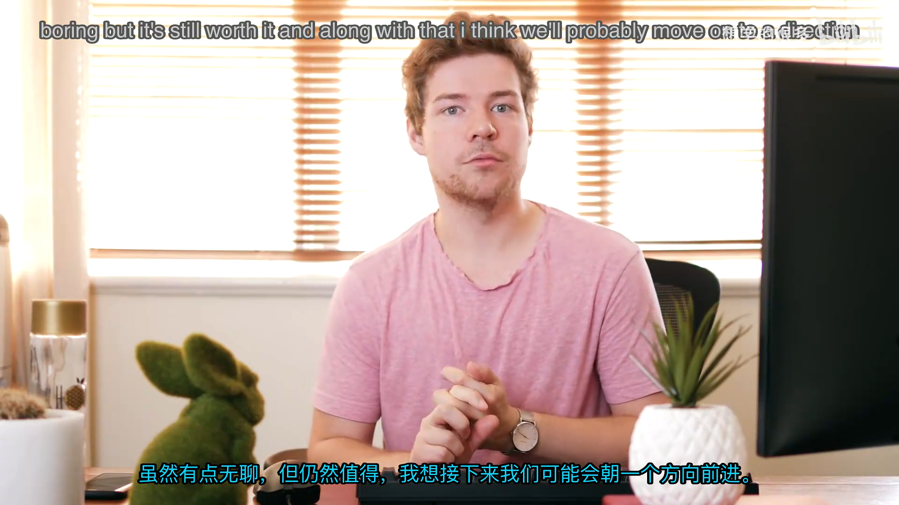
📷 当前剩余问题：GL viewport、GLFW 键码与输入轮询
回到原视频 (00:21:56)
10. 本节结论
本讲把 Hazel 事件系统和 Dear ImGui 真正连接到一起：
ImGuiLayer增加鼠标、键盘和窗口缩放处理函数；EventDispatcher根据事件类型路由到对应处理函数；HZ_BIND_EVENT_FN简化成员函数绑定；- 鼠标按钮、位置和滚轮状态写入
ImGuiIO； - 窗口缩放同步
DisplaySize、framebuffer scale 与 OpenGL viewport； - 按键状态和左右修饰键写入 ImGui；
- 新增
KeyTypedEvent、GLFW char callback 和AddInputCharacter()； - ImGui 窗口现在已经可以移动、点击、滚动和输入文本。
这段实现证明了 Hazel 事件系统已经具备实用价值。接下来需要消除 GLFW 键码依赖，并加入输入轮询，让引擎 API 不只知道“刚刚发生了什么”，也能回答“现在处于什么状态”。